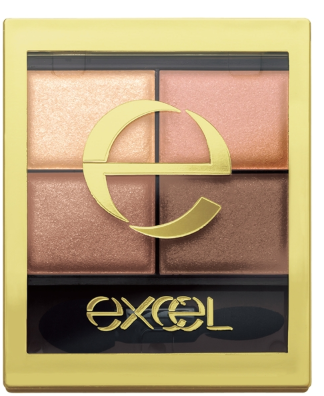
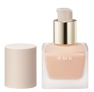
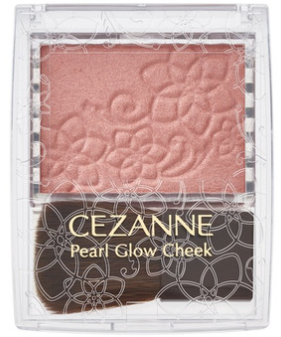

診断結果
ジェンダーレス系メイクで印象UP ：「垢抜けを実現する」
基本ステップを紹介！！！！
※がついている商品は肌に合わない可能性があるので
心配なら他の商品での代用でもOK!!
おすすめのメンズコスメはこちら
アイメイク：excel スキニーリッチ
シャドウ SR03

2019年で最も売れたアイシャドウが
エクセルのこの商品！！
デパコスのアイシャドウの質感に似てるし
４色も入っているし目元にスーッと馴染むし
なんか売れてる理由が分かる気がする。
ベースメイク：RMK リクイドファンデーション
【※混合肌の方は肌荒れ注意】
代用商品はこちら！！
[心配な方はこちらをクリック！！]

ハイライト/立体感メイク：セザンヌ
[心配な方はこちらをクリック！！]

安定のリキッドファンデとしておすすめしたいのは
RMKのアイテムです。どんな肌質にもピタッと馴染んで綺麗な肌質を作り上げてくれます。
ファンデ選びに迷ったらひとまず
RMKを使ってみてください。
眉メイク：Leanani レアナニ 3WAYアイブロウ
描きやすくてカラーバリエーションも豊富です！
パウダーは淡めなので薄く重ねていくほど
深みのある眉を作っていくことができます。
ハイライト/立体感メイク：セザンヌ
パールグロウチーク
【※混合肌の方は肌荒れ注意】
代用商品はこちら！！
[心配な方はこちらをクリック！！]毎日のスキンケアとメイクで
[心配な方はこちらをクリック！！]

お風呂上がりのような、ふんわりとした肌を
再現してくれるのがセザンヌのチークです。
ピーチカラーは肌色の透明感より
鮮明にUPしてくれるし、中性的な
印象を与えてくれるアイテムです。